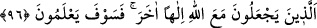

96. Onlar Allah ile berâber başka bir tanrı edinenlerdir. (Kimin doğru olduğunu)
yakında bilecekler!
“Onlar Allah ile berâber başka bir tanrı edinenlerdir” Yâni onlar Hak olan Allah
ile birlikte birtakım put ve benzerleri bâtıl ilâhları şerîk/ortak tutanlardır. Onlar kimin
doğru olduğunu “yakında bilecekler!” kendilerini nasıl bir âkıbetin beklediğini ve
yaptıklarına nasıl bir karşılık verileceğini yakında öğrenecekler.
Cenab-ı Hak, peygamberini tesellî etmek ve kendisine revâ gördükleri davranışların,
önem verilmemesi gereken şeyler olduğunu göstermek için onların kendisiyle alay
etmekle yetinmeyip daha da ileri giderek çok daha büyük bir suça, Allah’a ortak koşma
suçuna bile cür’et ettiklerini ifâde buyurmuştur.
“Yakında bilecekler!” ifâdesi, bir tehdîdden ibârettir. Pâdişahların vaad ve
tehdîdlerinde geçen ‘yakında, muhtemelen, belki’ türü sözler, işin ciddiyetine, bu sözden
sonra artık hiçbir şüphe olmadığına ve o şekilde cereyân edeceğine delâlet eder. İşte
Allah’ın vaad ve tehdîdleri de bu şekilde cereyân etmektedir.
Müfessirlerin büyük çoğunluğu bu âyetin Rasûlullah (s.a.)’e ezâ verip onunla alay
etmede çok ileri gidenlerden şân ve nüfûz sâhibi beş kişi hakkında nâzil olduğu
husâsunda müttefiktir. Allah onları aynı günde helâk etmiştir. Onların helâk edilmesi,
Bedir’den öncedir.
1- Onlardan birisi Amr b. Âs (r.a.)’ın babası, Âs b. Vâil es-Sehmî idi. Rasûlullah
(s.a.)’in arkasından O’nunla alay etmek için ağzıyla, burnuyla birtakım hareketler
yapardı. Yağmurlu bir günde iki oğluyla birlikte bineği üzerinde giderken, oradaki
vâdîlerden birinde konakladı. Ayağını yere koyar koymaz: “Beni bir şey soktu!’ dedi.
Neyin soktuğunu aradılar, fakat bulamadılar. Ayağı deve boynu gibi şişkin bir vaziyet
aldı ve orada öldü.
2- Onlardan birisi de Hâris b. Kays’tı. Bu adam, tuzlu balık yemişti. Şiddetli bir
susuzluğa dûçâr oldu. Karnı patlayıp yarılıncaya kadar su içti ve olduğu yerde öldü.
3- Onlardan birisi de Esved b. Muttalib b. Hâris’ti. Bir kölesiyle birlikte yola çıktı.
Bir ağacın gövdesine yaslanmış vaziyetteyken Cebrâîl (a.s.) geldi ve başını ağaca
vurmaya başladı. Kölesinden yardım istedi. Köle: “Ben sana kendinden başka bir şey
yapan birini göremiyorum:” diye cevap verdi. O da olduğu yerde ölüp gitti. O ve
arkadaşları, Hz. Peygamber (s.a.)’i ve ashâbını kaş-göz hareketleriyle çekiştirirler ve
O’nu gördüklerinde ıslık çalarlardı.
4- Onlardan birisi de Esved b. Abdiyegûs’tu. Âilesinin yanından ayrılıp sefere çıktı.
Samyeline kapılıp yüzü kapkara kesildi, kömür gibi oldu. Âilesinin yanına geldiğinde
onu tanıyamadılar ve kapıyı yüzüne kapattılar. Ölene kadar da onu evlerine sokmadılar.
İnsânü’l-uyûn’da der ki: Bu Esved, Hz. Peygamber (a.s.)’ın dayısının oğludur.